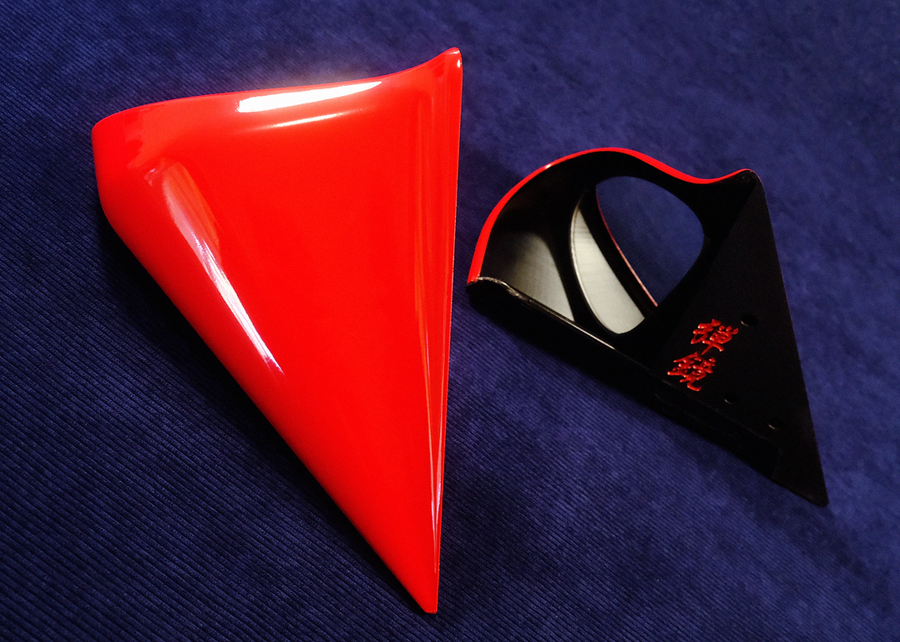
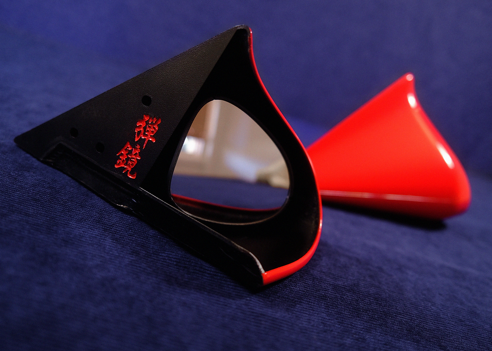
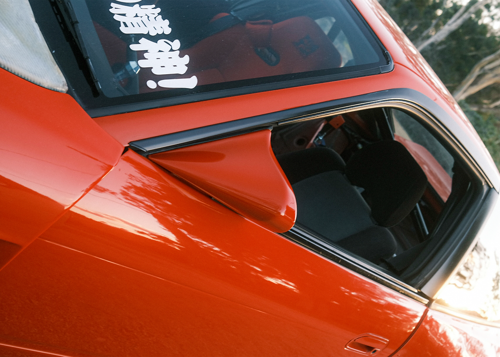
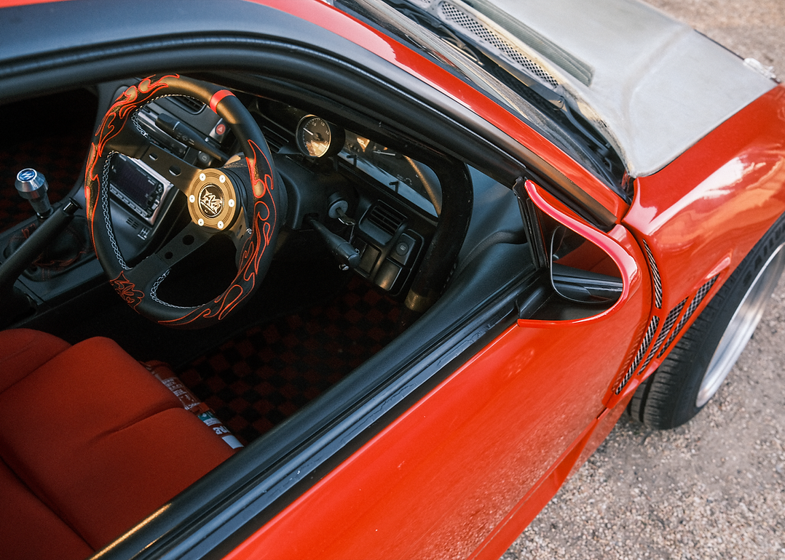

Aero Mirrors.
2025-present.
Inspired by the classical aero mirror shapes seen throughout the 80s and 90s, these aftermarket add-ons made especially for the NISSAN S13 coupe and hatchback aim to provide a sense of old-era tuning nostalgia.
I designed and manufactured these to fill a gap in the market for older makes and models of cars popularly used for drifting. With original fibreglass sets fetching well over $1000aud second hand, these reproduced versions come in at a more reasonable price point starting at $299aud.
These are 3D printed out of durable, OEM grade fibre-filled ABS, paired with modular assembly making them both durable and incredibly easy to repair. The bespoke glass is precisely laser cut from wide angle R1200 convex mirror sheets that deliver broad rearview visibility.
Digital modelling and fabrication techniques have allowed for rapid design iteration and testing. In future, mirrors for more makes and models will become available via my webstore.
More on this project: https://www.joysupplyjapan.com/product-page/s13-bullet-aero-mirrors https://www.instagram.com/p/Db2o8OtGLmP/?img_index=2 https://www.instagram.com/p/DbnMSC7ETff/?img_index=1 https://www.instagram.com/p/DUh5lHqEYLa/?img_index=1




S13 Bullet Aero Mirrors. Carbon Fibre ABS Plastic, Mirror Glass.